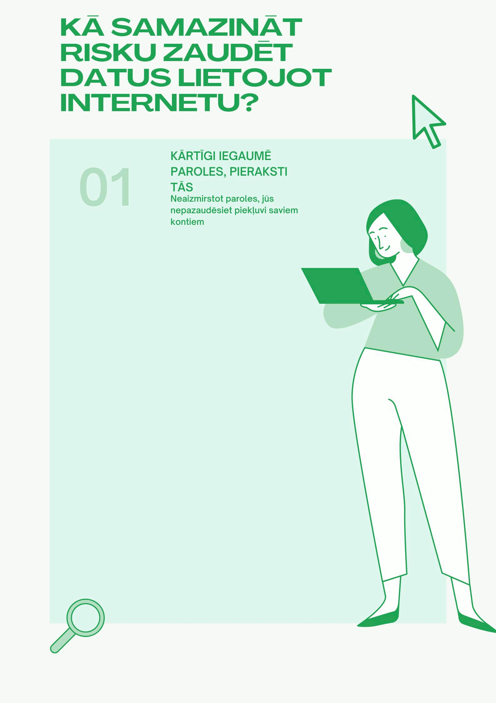

Atpakaļ uz sākumu!
Kā samazināt risku zaudēt datus lietojot internetu?
1. Kārtīgi iegaumē paroles un pieraksti tās drošā vietā
Izmanto spēcīgas paroles ar burtiem, cipariem un simboliem. Neizmanto vienu un to pašu paroli vairākos kontos.
2. Regulāri veido datu rezerves kopijas
Saglabā svarīgos failus ārējā cietajā diskā vai mākoņpakalpojumos.
3. Lieto drošu interneta pieslēgumu
Izvairies no nedrošiem publiskajiem Wi-Fi tīkliem.
20.09 izveidotā GIF animācija

Informācijas avoti